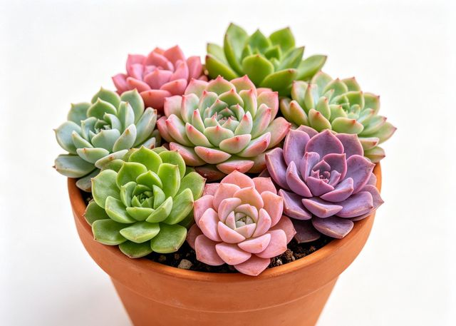

多肉
Succulent
品种丰富，造型呆萌可爱，极耐干旱，阳光越足颜色越美，是桌面的最佳伴侣。
查看养护指南
光照：充足阳光，至少4小时直射
温度：10-30°C，部分品种耐-5°C
浇水：干透浇透，约2-4周1次
土壤：多肉专用颗粒土，排水快
常见问题
徒长（茎节拉长、叶片稀疏）是光照不足的典型表现，需立即移至阳光充足处。化水（叶片透明软烂）是浇水过多或闷热不通风所致，需立即停止浇水并脱土晾根。
养护小贴士
夏季高温时严格控水遮阴，冬季低温时断水休眠。用麦饭石或赤玉土铺面既美观又能防止底部叶片接触湿土腐烂。